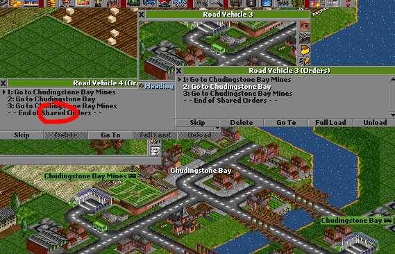

Orders
| Parts of this article (those related to Everything, Read talk page) may no longer be up to date. Please update this article to reflect recent events or newly available information, and remove this template when finished. Please see the talk page for more information. |
Orders make our networks work, they are what keeps our network alive, the cash flowing and prevent jams. Without proper order setup the trains won't go to the correct destination and won't be able to make money. This guide will lead you through the basics of giving orders and will also show you some more advanced orders.
Contents
Basic orders
You have build two stations and now you want to have a train running between them. The first thing you need to do is add the both the stations to the order list. We usually begin the orders with the pickup station:

After this you add the drop station:

You now have given the train both the destinations, to let this route be effective however you need load orders.
Load Orders
A load order is an order that tells the train to do a specific kind of loading. There are a few different kind of load orders:
- Load if available - The default load order. This order is not explicitly listed in the orders list so unless one of the other three load orders is present, this is the load order that the vehicle will use. When a vehicle stops at a station it will load all waiting cargo of any type that it can accept. The train will keep loading until it is either 100% full, or there is no cargo at the station to load.
- Full load all cargo - This load order tells the vehicle to stay at the station and load until it has reached 100% total cargo capacity. This load order will append "(Full load)" to the order.
- Full load any cargo - This load order tells the vehicle to stay at the station any load until any single cargo type that the vehicle accepts has reached 100%. An example would be an train that carries both passengers and mail, with full load any cargo the train will keep loading until either passengers or mail has reached 100% then continue to the next order. This keeps an train full of passengers from waiting at the station waiting for more mail to fill up the train. This order can be useful anywhere that vehicles can carry multiple cargo types. This load order will append "(Full load any cargo)" to the order. Note: If this order is applied to an airplane carrying both passengers and mail, "Full load any cargo" will wait until the passengers are fully loaded. In other words, the plane will wait for passengers even if the plane is carrying all the mail it can. This is true as of 2011.
- No Loading - This load order tells the vehicle not to load at that station. When the vehicle has finished unloading cargo, it will continue to the next order in it's order list. In coop games, all drop stations should have this order unless it is desired for vehicles to pickup cargo at the drop station. Because drop stations are typically very large (thus have a very large catchment area), it is possible for a primary industry to open up within the drop stations catchment area at a later point in the game. When this happens, and yes it does happen often in Public Server games, then vehicles will drop their cargo and load more cargo before departing the drop station. Now when the vehicle returns to the primary industry station it is already partially (or completely) full. This decreases network efficiency. It also creates the annoyance of a drop station having a primary cargo rating. This load order will append "(No loading)" to the order.
Unload Orders
An unload order tells a vehicle what to do with any cargo it may have.
- Unload if accepted- The default unload order. This order is not explicitly listed in the orders list so unless one of the other three unload orders is present, this is the unload order that the vehicle will use. When a vehicle stops at a station it will unload any cargo that it is carrying that is also accepted by the station.
- Unload all- This unload order tells the vehicle to unload all cargo, regardless of station acceptance. Any non accepted cargo will disappear.(verify, possibly stays in station.) This unload order will append "(Unload and <load order>)" to the orders list, where <load> is the load order. By default, adding the "Unload all" order will make the loading status "No Loading", displaying "Unload all and Leave Empty".
- Transfer- This unload order tells the vehicle to unload all cargo, regardless of station acceptance. Unlike "Unload all", all the cargo stays in the station, even if the cargo is accepted and would normally go directly to an industry. in addition, it will create "Digital Income". This unload order appends "(Transfer and <load order>)" to the orders list, where <load> is the load order. By default, adding the "Transfer" order will make the loading status "No Loading", displaying "Transfer and Leave Empty".
- No unloading- This unload order tells the vehicle that it is not to unload cargo at this station. This unload order appends "(Unload and <load order>)" to the orders list, where <load> is the load order.
Go Orders
Go orders are only available to trains and road vehicles(RV's). By default trains and RVs will stop at each station they pass through. Go orders can modify this behavior. The go order will immediately precede the station name in the orders list.
- Go to- This is the default go order. Vehicles will stop at the station on that line of the orders list AND STOP at any other station they travel through.
- Go non-stop to- Trains and RV's will stop at the station on that line of the orders list, but not stop at any other stations they travel through. There is an option in Advanced Settings/Vehicles to make: new orders are non-stop by default. This setting should be on for playing on the public server as single tile stations are frequently used on the public server for either penalties or occasionally used as waypoints. By making all orders "Go non-stop to", trains will not stop when they encounter theses stations.
- Go via- Trains and RV's will go to, and continue through the station in the order without stopping. They will, however, stop at any other stations they encounter. This order has the same functionality as waypoints. This order may have usefulness as a waypoint on a Self-regulating Network, after the loading stations, otherwise, the go non-stop via is preferred on the public server.
- Go non-stop via- With this order trains and RVs will go to without stopping at any station and continue through the station in the order without stopping. This effectively turns stations into waypoints. The benefits of using stations as waypoints are that they can be built across several tracks, and thereby serve as a single waypoint across all (or only some if so desired) tracks of a ML. This performs the same as waypoints with non-stop orders, and as station waypoints with the old TTDPatch non-stop compatible handling.
So for the train servicing the stations created above, the orders list will look like this:

The first order has the "Full load all cargo" load order, the second-order has the "No loading" load order, and both orders have the "Go non-stop to" order. So the train will go to the station Sleningville Mines without stopping at any other station it may encounter on the way. It will unload any accepted cargo that it may have and stay at that station until all wagons, and the locomotive(s) if they have their own cargo capacity, is completely full. When fully loaded, the train will then go to the station Breadborune Cross Woods without stopping at any other stations it may encounter on the way. There the train will unload any accepted cargo that it may have, and leave without loading.
Since no unload order is indicated, both of this train's orders have the default "Unload if accepted" order. Taking a view of the entire order list for this train tells us that the only place that it can get coal from is Sleningville Mines because there are only two stations the train is allowed to stop at, and it is only allowed to load at one of them. And even if a power station did open up within the catchment of Sleningville Mines the train would leave the station full of coal as unloading always happens before loading. The reason that the second-order does not need the "Unload all" order is that on the public server a secondary industry drop station (as Breadborune Cross Woods is in this example) will always have the necessary industry within the catchment area, and therefore always accept the coal. It is also important to only have the default "Unload if accepted" order in games using newgrf industries that have a maximum stock of raw materials (such as Pikkas Basic Industries or ECS), then the unaccepted coal can continue to another possible drop station. In practical use the "Unload all" order is just not necessary.
Transfer orders
When building multiple stations that are meant to be serviced by one train (or multiple trains sharing orders) you might need to use transfer orders. This kind of orders allow vehicles to keep cargo in the train and allow trains to unload all cargo at a station without loosing money. Transfer orders use virtual money this means that vehicles earn money so they don't show up as making a loss but the money won't be added to the bank balance. This is extremely usefull for making feeders. There are four kinds of transfer orders:
- Transfer and take cargo - the combination of the "Transfer" unload order, with the "Load if available" load order. This order tells a vehicle to unload all cargo that it has to the station, collect it's "virtual money" for the distance(s) that the cargo has traveled, and to load cargo until either the train is full or there is no more cargo waiting to load. Sometimes, this means loading the same cargo it just unloaded. However, this could be useful in NewGRF Industry sets like FIRS to give small amounts of cargo to each Primary Industry. See Reverse Feeder
- Transfer and wait for full load - the combination of the "Transfer" unload order with the "Full load all cargo" load order. This order tells a vehicle to unload all cargo that it has to the station, collect it's "virtual money" for the distance(s) that the cargo has traveled, and load cargo until the train is full. Sometimes, this means loading the same cargo it just unloaded.
- Transfer and wait for any full load - the combination of the "Transfer" unload order with the "Full load any cargo" load order. This order tells a vehicle to unload all cargo that it has to the station, collect it's "virtual money" for the distance(s) that the cargo has traveled, and to load cargo until any accepted cargo is full. Sometimes, this means loading the same cargo it just unloaded.
- Transfer and leave empty - the combination of the "Transfer" unload order with the "No Loading" load order. This order tells a vehicle to unload all cargo that it has to the station and collect it's "virtual money" for the distance(s) that the cargo has traveled. The cargo unloaded with this order will wait at the station to be loaded onto another vehicle, even if that cargo type is accepted at that station.
In the previous example of the coal train, let's assume that Breadbourne Cross Woods is just a transfer station where coal from several mines is gathered onto larger trains to travel to a central power station. In that case the orders would be:


You have the following setup in a town which feeds a central station with passengers as in the picture to the right. Note that there are 4 station in this ring and the trains can drive both directions, the orders of the trains driving clock-wise will be explained in this section. SDH is the station where all ICE trains go to and that will be the station that will receive the passengers from the feeder trains.
Sonderhorst Woods is the first station after the unload station and won't need a transfer orders as there is no cargo in the train yet. The next station is Sonderhorst, this station needs a No Unloading and take cargo order so we keep the current passengers loaded and take the passengers waiting at the station with us. Sonderhorst Heights needs the same orders as Sonderhorst. Last in line is SDH, this station will need a Transfer and Leave Empty order so the train will unload all the passengers loaded and also make some virtual money. The order list will end up looking like this:

change the photo, no unloading makes more sense than transfer sometimes.
These kind of orders are very usefull when working with SBahn and other feeder networks and must be used when working with SBahn rings with 3 stations or more.
Copy orders
It's useful to copy orders if you have vehicles that all have the same route. For example you have 10 airplanes and have to set them to 10 airfields. It's boring to look for the airfields over and over again.
To copy the orders of a vehicle you simple click on "Go To" in the orders screen (Note: The vehicle must have no orders on that moment) and click on the vehicle where you want to copy the orders from.
(This is just a copy of the page at the OpenTTD Wiki. At #openttdcoop, we ALWAYS use shared orders!)
You probably already know how to copy orders. The 'problem' with copying orders is that although all such vehicles have the same orders, they are all independent from each other. So if you would like to add another station to a particular group of buses servicing Chudingstone Bay (Fig 1.) for example, you would have to go through each bus and change that particular order for all of them.
There must be an easier way, right?
Yes there is an easier way. A way that also is more advanced, difficult, but also a lot more powerful. We will use the example in the picture below (Fig 1.). Once again, start giving out orders as you would normally for Bus#3. Nothing special has happened so far.
- Select Bus#4, and click on Go To.
- Hold down CTRL and click on Bus#3.
- Now the two buses share the same schedule; they are linked together.
You will see 2 things happen. First all Bus#4 will get the whole schedule from Bus#3, just as in copy orders. Secondly, you will see that "- - End of Orders - -" has been changed to "- - End of Shared Orders - -" for both buses. This is your proof that the schedule of the 2 vehicles are now linked together.


Wow cool, can you tell me more about it?
You can link together as many vehicles as you want, there is no limit. Of course you can only link buses together with buses, trains together with trains, etc. etc. Having the schedule list linked together opens up some nice possibilities.
- If you want to update the schedule for that whole group of vehicles, you only have to do it for one. Since they are all linked together, all others will also get the new schedule. This includes adding orders, as well as removing them.
Well, that's about it. But it saves you a lot of clicking and time-wasting that you could better use for expanding your world-domination conglomerate.
It is possible that you would like a vehicle that has shared orders removed from the share and reset its schedule. The service might not pay enough, you might want to open a new line, etc. Do the following:
- Open the Orders Window of the vehicle you want to remove from the share.
- Click on the last line, the one that says "- - End of Shared Orders - -"
- Press the Delete button.
You will see that all orders are removed from the schedule of that vehicle, and now the last line says "- - End of Orders - -". All other previously linked vehicles are unaffected by this change. Only our target vehicle has been removed. You can now control its schedule independently from all other vehicles as you would normally do without this fancy stuff.
Various Tidbits
- When trying to remove a vehicle from a shared schedule, don't be tempted to just delete all its orders as you normally would for deleting destinations. This will cause all linked vehicles to lose their orders and that was probably not the intention. Use the method described the just above paragraph.
- Sharing orders is also possible for vehicles that already have an existing schedule. To share orders you must hold down the "CTRL", thus you cannot accidentally lose the target vehicle's schedule. When doing so the vehicle will lose all of its orders, and only have the linked one. Something to keep in mind perhaps.
<< Trains | ^^ Back to Building Guides Index | How not to build >>
Categories: Articles in need of updatingGuides